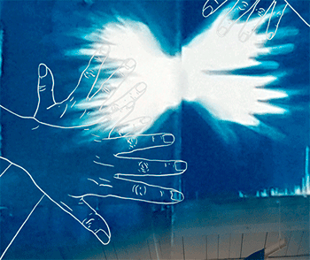

Featured Work
-- A Few Flaps to Belong --
Supported by Canada Council for the Arts and CBC/Radio Canada, this online dissemination explores my ongoing struggle between the yearning for home and the desire to belong. Click the image to view.

This work is best viewed on a portable device
in portrait mode.